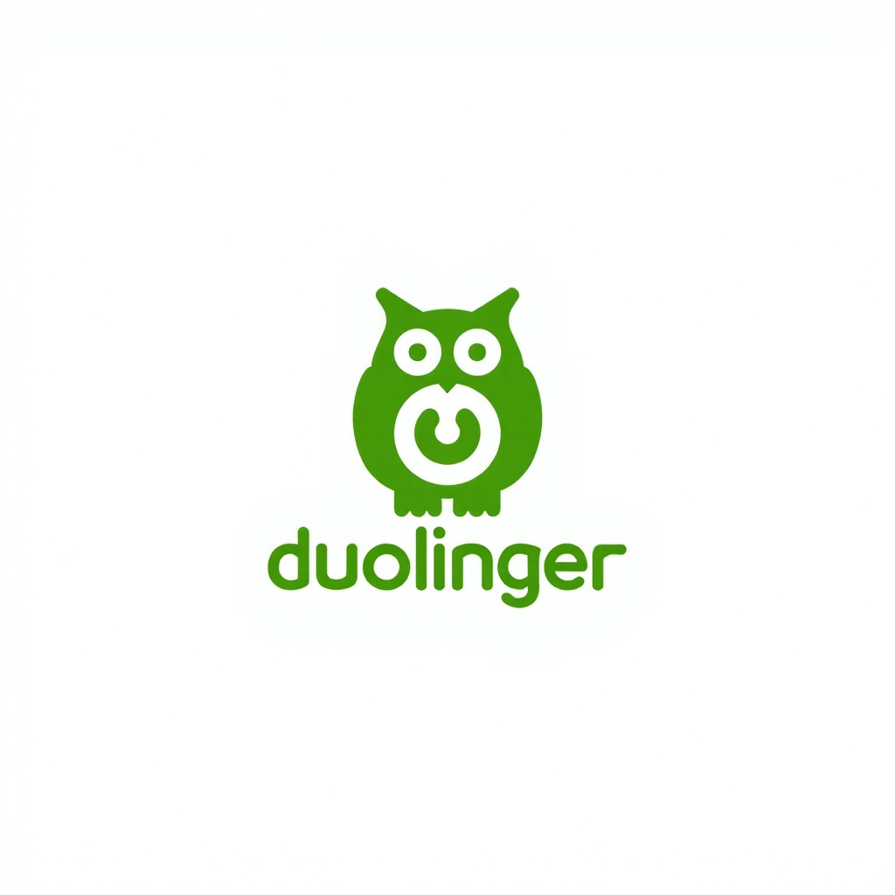
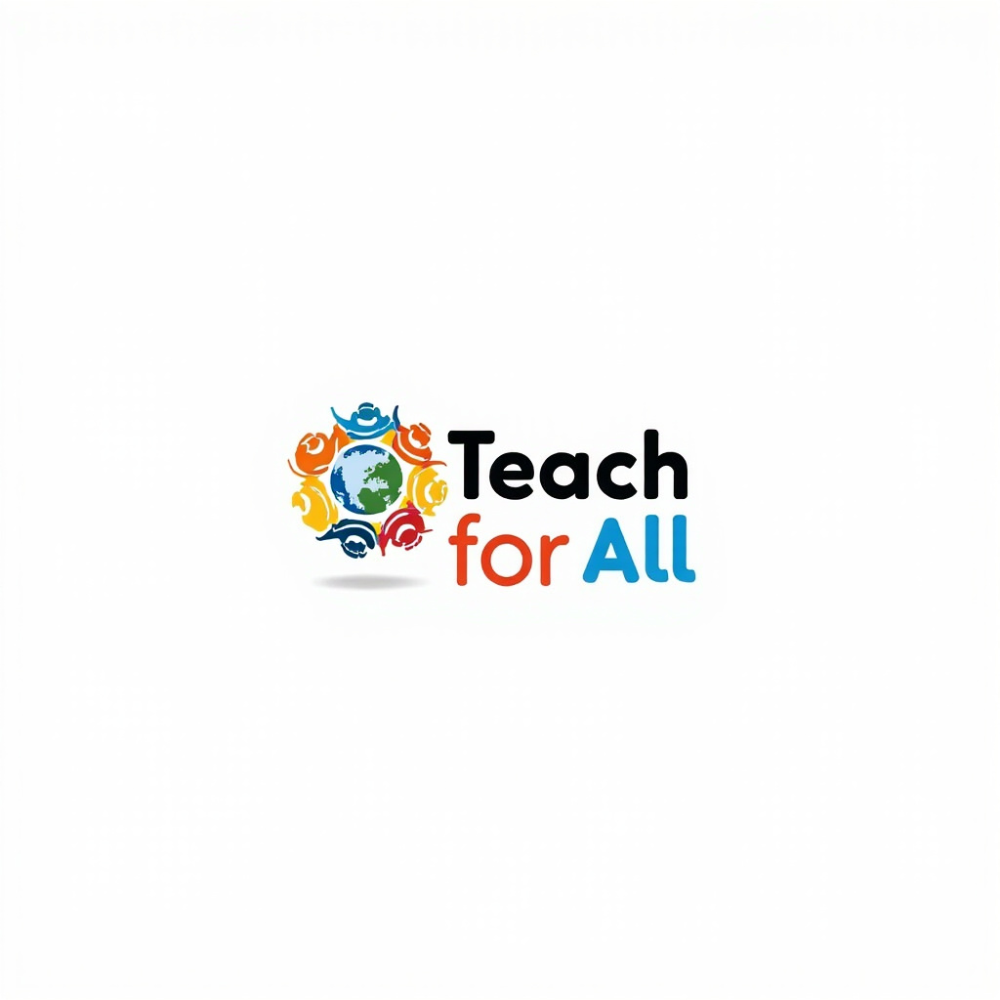

Scope: This page surveys the existing FLN product landscape — from open-source learning platforms to adaptive engines, assessment tools, and analytics dashboards. It covers products referenced in FLN research and is not a product page for Tenali itself. Tenali's specific architecture and feature set are documented in the research-report.md on the main platform repository.
FLN Platforms & Products

Global
Khan Academy Kids
Free adaptive learning app for ages 2–8, covering math, reading, logic, and socio-emotional learning. 50+ million downloads. The global benchmark for FLN product design.
khanacademy.org/kids

Open Source
Oppia
Free, open-source adaptive learning platform focused on underserved communities. Uses "explorations" with adaptive feedback. Active development on GitHub. Adopted in India for FLN remediation.
github.com/oppia/oppia

India
BYJU'S
India's largest ed-tech platform. Adaptive engine uses spaced repetition + concept mapping. Teacher dashboard shows heat maps of concept mastery gaps. Cautionary design for FLN contexts (aggressive pacing).
byjus.com

Global
Duolingo
Uses spaced repetition with "strength" meter and gamified "hearts" (lives) system. Teacher dashboard shows individual progress. Lesson-level difficulty adjusts based on error rate. Relevant for Tenali's gamification design.
duolingo.com

AI-Powered
Tenali (Tenali FLN Platform)
Adaptive regression-based FLN platform for ages 10–16. Story-based theorem delivery with adaptive difficulty regression. Teacher analytics dashboard. Targets the "extended FLN window" acknowledged by NIPUN Bharat Phase 2.
github.com/sudarshansudarshan/jinal-deploy

India
DIKSHA — National Digital Infrastructure for Teachers
India's national ed-tech platform for teacher training and FLN content delivery. Hosts NIPUN Bharat training modules. Used by 1.2+ crore teachers and students. Key delivery channel for NIPUN Bharat Phase 2.
diksha.gov.in

Open Source
Moodle
The world's dominant open-source Learning Management System (LMS). Used by universities and schools globally. Extensive plugin ecosystem includes adaptive learning features.
github.com/moodle/moodle

Global
Teach For All Network
Global network of independent non-profit organizations recruiting future leaders as teachers in under-resourced schools. Active in 40+ countries. Each program addresses FLN as part of educational equity work.
teachforall.org
Platform Comparison
How the major FLN platforms compare on key dimensions relevant to Tenali's design decisions.
| Platform | Regression Adaptive | Story-Based | FLN Ages 10–16 | Teacher Dashboard | Open Source | Hint System |
|---|---|---|---|---|---|---|
| Khan Academy Kids | Mastery-based | Partial | Ages 2–8 only | Yes | Yes | 3-level hints |
| Oppia | Yes | Yes | Partial | Limited | Yes | Yes |
| BYJU'S | Yes | Yes | Yes | Yes (heat maps) | No | Partial |
| Duolingo | Spaced repetition | Stories only | Partial | Yes | No | Yes |
| DIKSHA | No | Partial | Yes | Partial | Government | No |
| Tenali ★ This Site | Regression engine | Story-first | Ages 10–16 | v0.46–v0.50 | Yes (planned) | 3-level hints |
FLN Pedagogical Frameworks
Evidence-based principles that should inform any FLN product design, drawn from research literature and Indian government frameworks.
01
CPA Approach (Concrete → Pictorial → Abstract)
Start with physical/manipulable representations, move to visual, then formal notation. Maps to Tenali's story intro (concrete) → formal theorem (abstract) progression.
02
Contextual Scaffolding
Math concepts must be anchored in real-world scenarios before formalization. Story-based contexts increase test scores ~20% vs. traditional instruction.
03
Zone of Proximal Development (ZPD)
Optimal learning happens just above current mastery level. Regression-based systems preserve this by backing off when students struggle.
04
Narrative-Driven Concept Introduction
Embed theorems within story arcs: protagonist faces problem → mathematical reasoning → resolution. Character investment reduces math anxiety.
05
Progressive Formalization
Optimal pedagogical arc: Story → Guided Example → Independent Practice → Real-world Application. Maps to Tenali's Stage 1 structure.
06
Cognitive Load Theory (CLT)
Struggling at too-high difficulty causes anxiety and disengagement. Regression preserves dignity — the theoretical foundation for why regression works.
07
Dual-Coding Theory
Combining verbal narrative + visual imagery improves retention over text alone. Tenali's story intro + visual coding context activates both channels.
08
Hint-First, Regression-Second
Scaffold before retreating. Hints first (1 wrong answer), regression only on repeated failure (3rd wrong attempt). Maintains student agency.
Teacher Dashboard — Recommended Tiers
Tier 1
Must-Have — Actionable Immediately
Student completion rate, mastery score per algorithm/topic (0–100), regression count per session, last active timestamp, alert status.
Tier 2
Diagnostic — For Deep Dive
Questions attempted vs. correct first-try rate, time spent per stage, stage-by-stage progression timeline, XP history chart.
Tier 3
Systemic — Cohort/Class Level
Cohort mastery heat map, common failure points across cohort, completion funnel, cohort comparison.
Alert Types
When to Notify Teacher
5+ regressions/session (in-app + email), same stage stalled 3+ sessions (in-app), inactive 7+ days (in-app + email), accuracy <40% on rolling window (in-app).